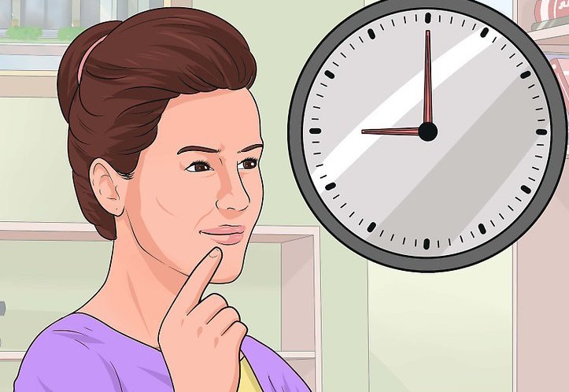
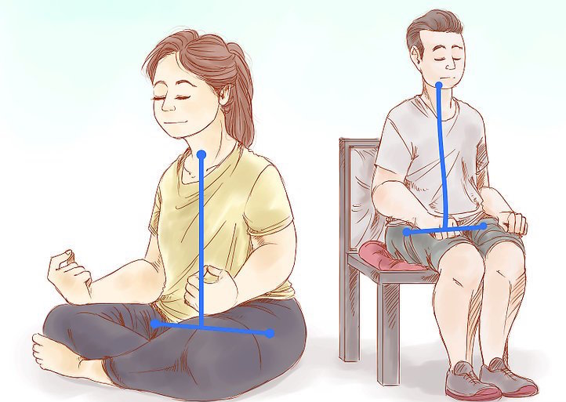
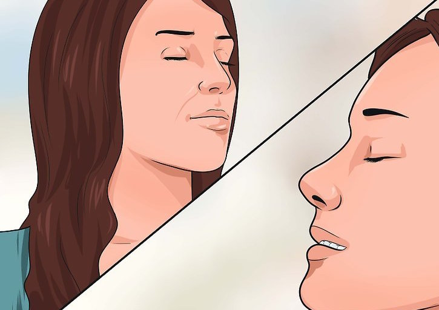
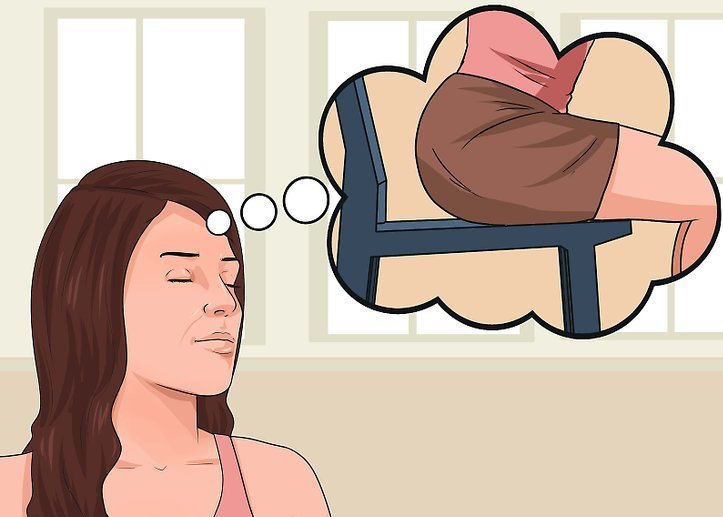
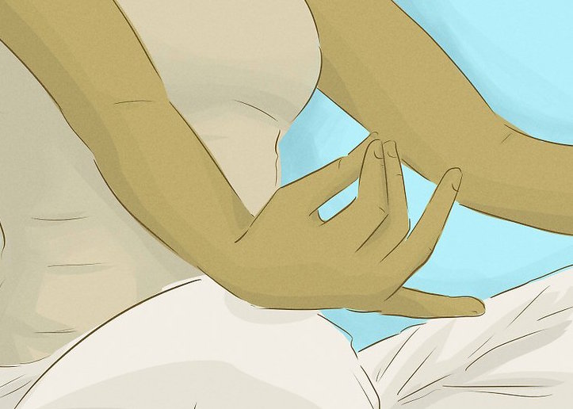
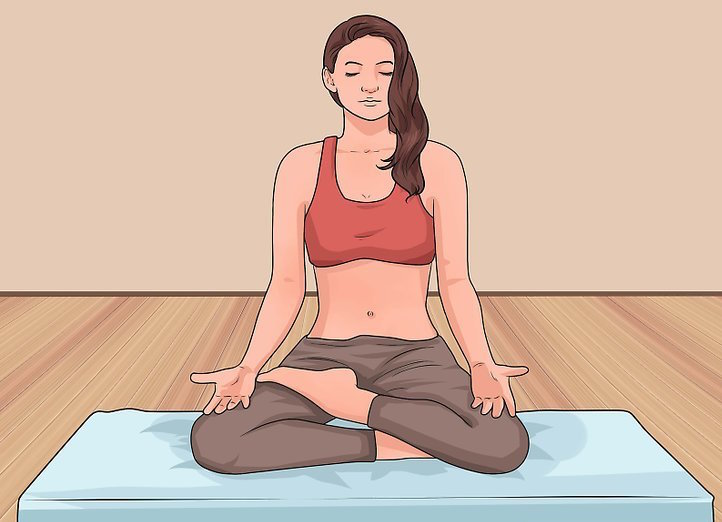
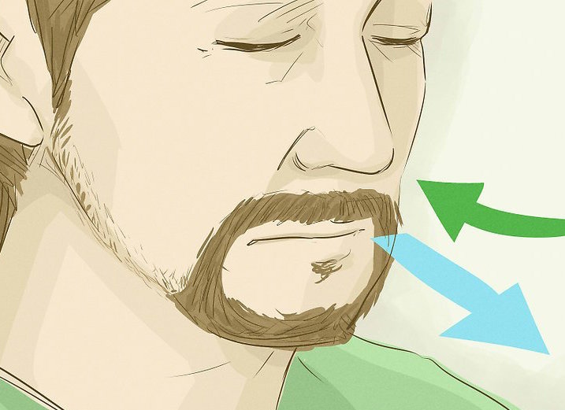
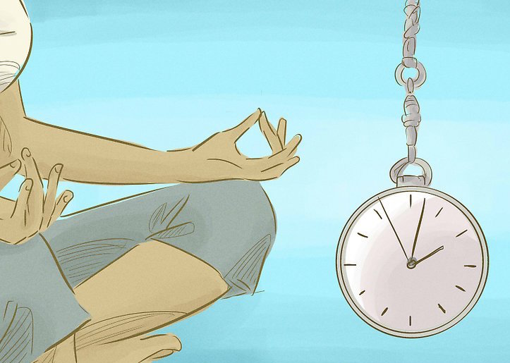
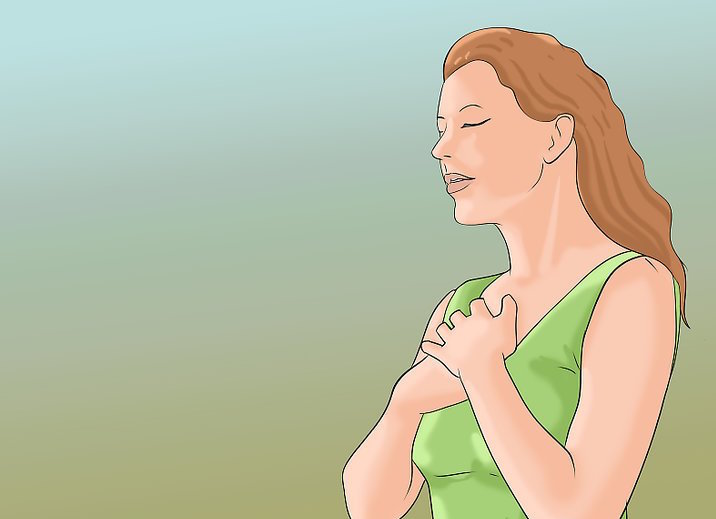
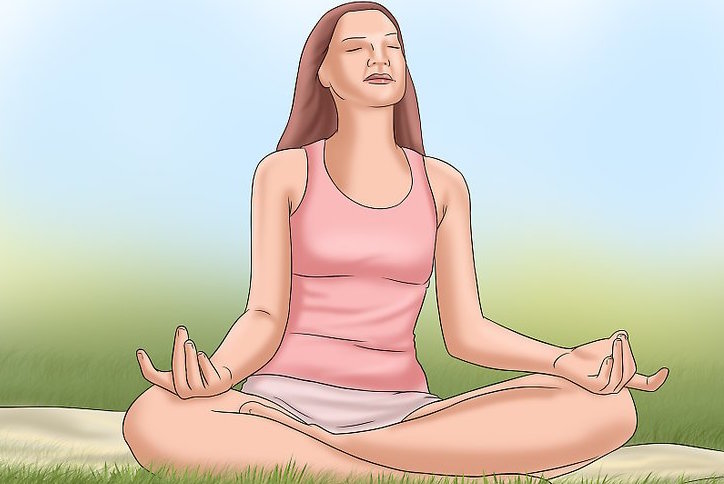

How to meditate?
Dont know where to start? Heres a guide on how to meditate!
Step 1
The first step is committing to a regular, daily practice. Taking 10 minutes out each day shouldn’t be difficult, but it’s easy to get caught up in everything that’s going on. Try to make it a regular part of your schedule. Create a space to sit at the same time each day. Mornings seem to work best for most people, but find a time that works for you. Where you do it doesn’t matter, just as long as you’re unlikely to be interrupted.

Step 2
Sit comfortably in a chair with your hands resting in your lap or on your knees. Keep your back straight sitting at the front of the seat might help. Your neck should be relaxed, with your chin slightly tucked in. Follow our timer, commit to practising for the full time set aside, whether you find the session easy or difficult.

Step 3
Defocus your eyes, gazing softly into the middle distance. Take five deep, audible breaths, breathing in through the nose and out through the mouth. On the last exhalation, allow your eyes to close.

Step 4
Take a few moments to settle into your body. Gently observe your posture, and notice the sensations where your body touches the chair and your feet meet the ground. Feel the weight of your arms and hands resting on your legs. Acknowledge your senses: notice anything you can smell, hear or taste and sensations of heat, cold or wind.

Step 5
Slowly turn your mind inwards. Scan your body from head to toe, observing any tension or discomfort. Don’t try to change what you find, simply take note of it. Scan again, although this time notice which parts of the body feel relaxed. Take about 20 seconds for each scan. Now turn your awareness to your thoughts. Notice any thoughts that arise without attempting to alter them. Gently note your underlying mood, just becoming aware of what’s there without judgment. If there’s nothing obvious, that’s fine, too.

Step 6
Pause for around 30 seconds and consider why you’re sitting today. Recognise any expectation or desire you’ve brought along, and let it go. Spread the love: take a moment to consider the wider effects of being mindful today. Feeling calmer helps you feel better – which in turn has a positive knock-on effect for people you encounter during the day, from colleagues to partners to your bus driver. Become aware of this ripple effect. Nothing to achieve: before you continue in the session, remind yourself that there’s no “thing” for you to do here – your only job is to sit for the full session, but beyond that there is nothing for you to do in the normal sense of the word. All you have to do is step back and let it all unfold in its own time and own way.

Step 7
Bring your attention to your breathing. Don’t make any effort to change it, just observe the rising and falling sensation that it creates in your body. Notice where these sensations occur – be it your belly, your chest, your shoulders, or anywhere else. For a few moments, focus on the quality of each breath, noting whether it’s deep or shallow, long or short, fast or slow. Begin silently counting the breaths: 1 as you inhale, 2 as you exhale, 3 on the next inhalation, and so on, up to 10. Then start again at 1. While doing this, it’s completely normal for thoughts to bubble up. You don’t need to “do” anything – just guide your attention back to the breath when you realise the mind has wandered off. If you can remember the number you’d counted up to, start again from there, or simply start from 1 again. Continue until the timer sounds.

Step 8
Spend 20-30 seconds just sitting. You might find yourself inundated with thoughts and plans, or feel calm and focused. Whatever happens is completely fine. Enjoy the rare chance to let your mind simply be.

Step 9
Become aware once more of the physical feelings: of the chair beneath you, where your feet make contact with the floor, your arms and your hands resting in your lap. Notice anything you can hear, smell, taste or feel. When you’re ready, slowly open your eyes.

Step 10
Before standing up, form a clear idea about what you’re going to do next, like brushing your teeth, making a cup of tea or getting your keys to leave the house. It’s so easy to just jump up off the seat and lose the calm and spacious quality you’ve just created. Try to carry this awareness with you to the next activity. Touch base: throughout the day, find small moments to remind yourself what it felt like to have that clarity and focused attention. Maybe when you first sit down at your desk at work, when you drink your morning coffee, or when you’re on the bus. You don’t need to do the whole exercise – just take a couple of deep breaths, notice how you feel, and observe any areas of tension
